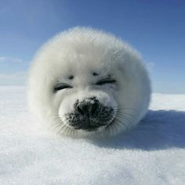
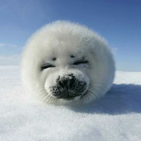
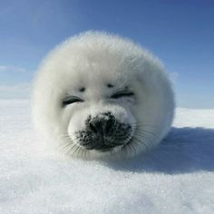

La foca pía, foca arpa o foca de Groenlandia (Pagophilus groenlandicus), es una especie de mamífero pinnípedo de la familia Phocidae, que habita en el Océano Atlántico Norte y el Océano Glacial Ártico.2 En inglés se le llama harp seal (en español «foca arpa»).3
